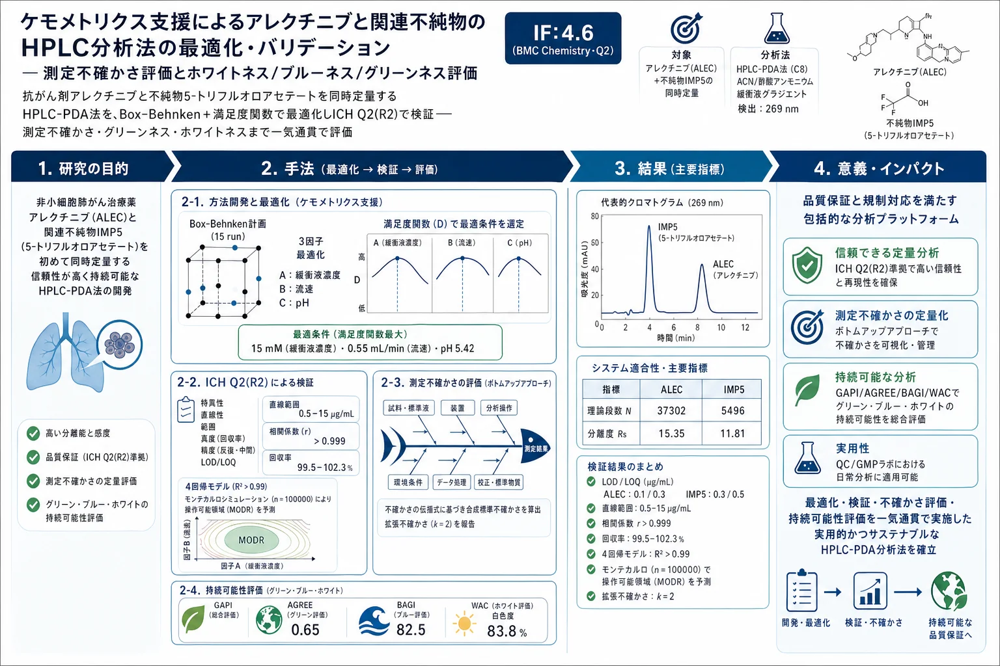

ケモメトリクス支援によるアレクチニブと関連不純物のHPLC分析法の最適化・バリデーション — 測定不確かさ評価とホワイトネス/ブルーネス/グリーンネス評価

<!-- 方針: 16ページの分析法開発論文の全訳。原文構成(Abstract→Introduction→Materials and method→Results and discussion→Conclusion)に忠実。数値・表(Table1-6)と回帰式(2)-(5)・不確かさ式(1)を保持。「> 補足:」は訳者注。 対象は合成薬(アレクチニブ)で生薬ではないが、DoE/満足度/AQbD/測定不確かさ/グリーン評価の実装例として収録。 -->
書誌情報
- 標題（原題）: Chemometrically assisted optimization and validation of the HPLC method for the analysis of alectinib and its related impurity with measurement uncertainty evaluation and whiteness, blueness, and greenness profile assessments
- 著者・所属: Serkan Levent, Abeer Elriş, Hazal Avcı, Saniye Özcan, Nafiz Öncü Can（アナドル大学薬学部 分析化学教室／中央分析ラボ MERLAB、トルコ・エスキシェヒル）
- 掲載誌・巻号・DOI: BMC Chemistry (2025) 19:147. https://doi.org/10.1186/s13065-025-01509-y
- インパクトファクター: 4.6（BMC Chemistry, Q2・2024 JCR）。5年IF 4.9。
- 受理経過 / ライセンス: Received 2025-01-15 / Accepted 2025-05-13。CC BY-NC-ND 4.0（RESEARCH、オープンアクセス）
- 資金: アナドル大学科学研究プロジェクト基金（2207S092）
補足（この論文の位置づけ）: 対象は生薬・漢方ではなく合成の抗がん剤アレクチニブ（ALK 阻害薬）とその製造由来不純物である。ただし本サイトに収録する理由は、分析法開発の“お手本”としての完成度にある——(1) Box–Behnken 計画＋満足度関数（デザイラビリティ）による多応答同時最適化、(2) ICH Q2(R2) に沿ったフルバリデーション、(3) ボトムアップの測定不確かさ評価（魚骨図＋不確かさ伝播式＋モンテカルロ）、(4) GAPI／AGREE／BAGI／WAC によるグリーンネス・ブルーネス・ホワイトネス評価、を一つの方法開発の中で通しで示している。生薬QCで DoE/AQbD やグリーン分析を導入する際の具体的な手順書として読める。
要旨（Abstract）
アレクチニブ（ALEC）は最も一般的な第二世代の未分化リンパ腫キナーゼ（ALK）阻害薬で、種々の ALK 変異に有効で、非小細胞肺がん（NSCLC）の治療に用いられる。本研究では、新規 HPLC 法を開発し、アレクチニブとその不純物 5-トリフルオロアセテート（IMP5） の同時定量を実現した。固定相は Ascentis® Express 90 Å C8（10 cm × 4.6 mm, 2.7 µm）、分離はアセトニトリルと酢酸アンモニウム緩衝液から成る移動相のグラジエントで達成し、PDA 検出器を波長 269 nm で記録した。最適化は Box–Behnken 計画（BBD）で行い、最適条件は満足度関数（desirability function）に従って選定した。バリデーションは ICH Q2(R2) ガイドラインで実施。LOD は 0.1 および 0.3 µg/mL、LOQ は 0.3 および 0.5 µg/mL（それぞれ ALEC と不純物）。回収試験は Alecensa® カプセル（150 mg アレクチニブ/カプセル）で行い、高い回収率で優れた精度・正確性を示した。測定不確かさの推定にはボトムアップアプローチを用い、不確かさの源とクロマト応答に影響する因子を特定・定量した。得られた回帰モデルは妥当と判断され、モンテカルロ法で操作可能設計領域を定義するのに用いた。提案法のエコフレンドリー性は ComplexGAPI・AGREE・BAGI の各グリーンネス評価ツールで、また新規の White Analytical Chemistry（WAC）ツールで白色度を算出して検証した。本法は QC ラボにおけるアレクチニブと不純物の定量に利用できる。
キーワード: HPLC、アレクチニブ、不純物、Box–Behnken
序論（Introduction）
肺がんは世界で最も一般的で致死的ながんの一つで、全新規がん診断の約 13%、がん関連死の約 25% を占める[1]。非小細胞肺がん（NSCLC）は米国の全肺がんの 84% を占め、高い死亡率の主要因である。分子標的治療の登場で、遺伝的に規定された NSCLC サブセットの治療成績が向上した。ALK 遺伝子の再構成が発がんドライバーとして同定され、EML4-ALK 融合遺伝子が NSCLC の一部で見いだされた[2]。クリゾチニブが最初の ALK 阻害薬だが、血液脳関門透過などの課題があり、第二世代の開発が必要とされた。承認された最初がセリチニブ、次いでアレクチニブ（ALEC、Alecensa®、日本が 2014 年 7 月に ALK 再構成 NSCLC の治療に承認）[2]。ALEC は ALK チロシンキナーゼの経口 ATP 競合阻害薬で、ALK に対しクリゾチニブの 5 倍の効力を持ち、クリゾチニブ耐性の獲得 ALK 変異の多くを阻害しうる[3]。
医薬品の安全性と有効性は薬物治療の 2 大要件である。医薬品中の不純物はしばしば望ましくない薬理・毒性作用を示し、治療上の利点を打ち消しうるため、不純物の監視・管理が必須である[Rao & Nagaraju 2003]。ALEC 不純物に関する文献情報は乏しいが、TLC Pharmaceutical Standards Ltd. は約 15 種の ALEC 不純物を製品として挙げ、分子量は 412.54〜562.69 g/mol、うち 7 種が CAS 番号を持つ（Table S1）[4]。
分析法開発の目的は、低濃度の分析対象を満足な正確性で定量することにある。どの方法論でも、グリーンケミストリー原則と経済コストを考慮し、試験回数と時間を減らして最適条件を見いだす必要がある。ケモメトリクス手法は、検討因子の重要性・統計的有意性と交互作用効果を評価する数理モデルの構築を助ける。多変量最適化は検討変数の評価から始まり、Doehlert 行列・中心複合計画・三水準計画（Box–Behnken 計画など）で理想の操作条件を決める。各応答に満足度関数（D、0〜1）を計算し、幾何平均で総合 D を導き、これを最適化するアルゴリズムで最適変数値を特定する。BBD は三水準不完全要因計画に由来する二次（ほぼ回転可能）計画で、二次モデルパラメータの推定・逐次計画・モデル不備の同定・ブロック化を可能にする[23]。
健康と環境への科学的関心は 1990 年代初頭に始まり、有害化学物質の悪影響への認識から過去 20 年で大きく高まって「グリーン分析化学（GAC）」の語と持続可能な開発（SD）概念を生んだ。GAC は分析工程から有害化学物質を減らす・除くことで、方法性能を損なわず環境調和性を高めることを指す。AGREE・GAPI・NEMI などの指標ツールが GAC 適合度を測るが、これらは方法の潜在能力を包括的に捉えられず持続可能性の程度を測れない。近年、GAC・SD 原則を含む全基準をアルゴリズムで評価する Red–Green–Blue（RGB）モデルが導入され、これに着想を得て緑・他の残る基準を含めた White Analytical Chemistry（WAC）が開発された。WAC は赤・青・緑で表される全原則を包含し、それらの交わりから生じる白色で SD 原則を評価できる[25]。
ALEC の分解挙動を論じた研究は文献で 3 件のみ。1 件目は ALEC 塩酸塩溶液を各種ストレスに曝し、酸化条件で 4 つの新規分解物（アミド・N-オキシド・N-ヒドロキシ・エポキシド不純物）を HPLC で分離、NMR・FTIR・LC–MS で構造同定[26]。2 件目は錠剤・原薬中 ALEC の UPLC 法（直線 1〜100 μg/mL、LOQ 0.07 μg/mL）で、光分解を除くほぼ全ストレスで分解を確認（酸 5.18%・アルカリ 3.10%・過酸化物 3.29%・熱 4.13%）[27]。3 件目は安定性指示法の開発を核とする包括的論文。従来、ALEC・その不純物・両者を同時に定量する分析法は存在しない。よって本研究は、ALEC と ALEC 不純物 5-トリフルオロアセテート（IMP5）を同時に定量する新規・高感度・環境調和型 HPLC 法の開発を目的とする。PDA 検出器は両分析対象が UV–VIS 域に吸収を持ち検出器が普及していることから選択。不純物の物理化学的性質が不明なため、最適化段階での BBD 利用が有益であった。
材料と方法（Materials and method）
試薬
ALEC 標準（純度 ≥98%、Carbosynth）、IMP5（≥99%、TLC Pharmaceutical Standards）、LC グレードのギ酸アンモニウム・酢酸アンモニウム・ギ酸・酢酸（Sigma Aldrich）、HPLC グレードのアセトニトリル・メタノール・DMSO（CARLO ERBA）。ALEC 製剤 Alecensa®（150 mg、Roche）。
装置
Shimadzu Nexera 2040 C 3D（四元グラジエントポンプ・オートサンプラー・PDA、Lab Solutions）。室内再現精度は別系の Shimadzu Nexera UHPLC（2 ポンプ LC-20 AD・SIL-20 A HT・CTO-10 AS vp・SPD-M20 A PDA、LC Solutions）で実施。
クロマトグラフィー条件
移動相はアセトニトリル＋15 mM 酢酸アンモニウム緩衝液（pH 5.42）でグラジエント（Table 2）。固定相は Ascentis® Express 90 Å C8（10 cm × 4.6 mm, 2.7 µm）。流速 0.55 mL/min、カラム温度 40 ± 1 ℃、PDA 269 nm、注入量 5 µL。
Table 2. グラジエントプログラム
| 時間（min） | アセトニトリル比率（%） |
|---|---|
| 0.5 | 35 |
| 3.5 | 70 |
| 4.5 | 85 |
| 7 | 35 |
| 8 | 停止 |
溶液調製
酢酸アンモニウム緩衝液: 標準 1.16 g を蒸留水 1.00 L に溶解し酢酸で pH 調整。ALEC ストック: 0.51 mg を DMSO/メタノール 60/40（v/v）1.00 mL に溶解、5 分ボルテックス。IMP5 ストック: 0.85 mg を DMSO/メタノール 50/50（v/v）1.00 mL に溶解、5 分ボルテックス。標準液・直線性・LOD/LOQ 溶液はメタノールで希釈調製。カプセル溶液（回収試験）: Alecensa®（150 mg/カプセル）10 カプセルの平均重量を求め、粉砕・秤量して 250 mL メスフラスコにメタノール/DMSO 100/150（v/v）で溶解、5 分ボルテックス＋15 分超音波＋再度 5 分ボルテックス。PTFE 0.22 µm ろ過後、IMP5 ストックを加え 1:10 で中間ストックとし、メタノール希釈で 80/100/120% の回収溶液を調製。
方法最適化（BBD）
ALEC と IMP5 を同時定量し、IMP5 の物理化学的性質が不明なため、応答曲面法の中から BBD を選択。予備実験で固定相（C8/C18）・移動相有機修飾剤（アセトニトリル/メタノール）・緩衝液（ギ酸/酢酸アンモニウム）・pH・流速・グラジエントを検討。3 因子 3 水準（独立因子: 緩衝液濃度 A・流速 B・pH C、Table S2）で 15 run（中心点 3 反復、Design Expert 12）を設定（Table 3）。応答は両ピーク（ALEC・IMP5）の分離度と容量因子の 4 つ。各因子を一元配置 ANOVA で解析し応答曲面を作図。二次多項式（式(1)–(4)）でモデル化し、モデル・不適合の p、R²、変動係数、adequate precision で適合を評価。最適条件は満足度関数（D）で選定、回帰式で応答の設計空間を予測。
Table 3. Box–Behnken 計画（因子と応答、抜粋） （A: 緩衝液濃度 mM／B: 流速 mL/min／C: pH。応答は ALEC 容量因子・ALEC 分離度・IMP5 容量因子・IMP5 分離度）
| Run | A(mM) | B(mL/min) | C(pH) | ALEC k′ | ALEC Rs | IMP5 k′ | IMP5 Rs |
|---|---|---|---|---|---|---|---|
| 1 | 10 | 0.60 | 4.50 | 1.96 | 17.00 | 0.35 | 6.14 |
| 2 | 15 | 0.60 | 5.50 | 2.69 | 16.06 | 1.33 | 15.81 |
| 3 | 5 | 0.55 | 6.50 | 2.74 | 14.04 | 1.74 | 18.21 |
| 4 | 15 | 0.55 | 6.50 | 2.77 | 13.95 | 1.55 | 19.21 |
| 5 | 15 | 0.50 | 5.50 | 2.69 | 12.00 | 1.21 | 10.52 |
| 6 | 5 | 0.60 | 5.50 | 2.66 | 14.94 | 1.27 | 12.58 |
| 7 | 10 | 0.55 | 5.50 | 2.65 | 17.60 | 1.29 | 17.68 |
| 8 | 10 | 0.50 | 4.50 | 1.45 | 18.14 | 0.43 | 6.76 |
| 9 | 5 | 0.55 | 4.50 | 1.50 | 17.50 | 0.38 | 6.40 |
| 10 | 15 | 0.55 | 4.50 | 1.64 | 17.40 | 0.31 | 5.62 |
| 11 | 10 | 0.60 | 6.50 | 2.84 | 17.00 | 1.68 | 19.34 |
| 12 | 5 | 0.50 | 5.50 | 2.44 | 14.84 | 1.24 | 15.54 |
| 13 | 10 | 0.50 | 6.50 | 2.86 | 11.75 | 1.50 | 15.76 |
| 14 | 10 | 0.55 | 5.50 | 2.63 | 17.24 | 1.28 | 18.95 |
| 15 | 10 | 0.55 | 5.50 | 2.53 | 17.90 | 1.22 | 18.60 |
方法バリデーション
ICH Q3A(R2)・Q3B(R2) は新医薬品/製品中の全不純物の同定を求め、同定・特性確認・定量が要る不純物レベルは原薬の最大 1 日摂取量に依存する。最大 1 日用量 100 mg〜2 g では報告閾値 0.05%、同定閾値 0.2% または 2.0 mg/日、特性確認閾値 0.2% または 3.0 mg/日[28,29]。ALEC の最大 1 日用量は 600 mg（Alecensa® 4 カプセル相当）で第 3 カテゴリに入り、不純物 LOQ は 1.2 mg 未満であればよく、IMP5 の LOQ 0.5 µg/mL は許容範囲内。バリデーションは ICH Q2(R2) に基づき LOD・LOQ・検量線・作業範囲・精度・正確性・安定性・頑健性を評価。LOD は S/N=1/3、LOQ は S/N=1/10 で決定。作業範囲は IMP5 は LOQ から、ALEC は 0.5 µg/mL から、両者 15 µg/mL まで。検量線は 3 反復し一元 ANOVA。精度は同一濃度を日内・日間（3 日）で解析、室内再現精度は別装置で確認。正確性は Alecensa® カプセル溶液を 3 濃度（80/100/120%）で 3 反復。安定性は凍結融解 3 サイクル・短期 48 h・長期 2 週で回収率評価。
測定不確かさ
不確かさ源を魚骨図で整理し数式化。不確かさ伝播法で合成不確かさを式(1)で算出。室温管理環境のため温度由来不確かさは無視。拡張不確かさ u は標準不確かさに包含係数 k=2（95% 信頼水準）を乗じて算出[30]。
式(1)（合成相対不確かさ）: uw / w = √[ (uAt/At)² + (uAs/As)² + (ums/ms)² + (uPs/Ps)² + (umt/mt)² + r·(ums/ms)(umt/mt) ]。ここで At・uAt=試料ピーク面積とその不確かさ、As・uAs=標準ピーク面積、ms・ums=標準の秤量質量、Ps・uPs=標準品純度、mt・umt=試料の秤量質量、r=標準と試料の秤量質量の相関（同一天秤使用による）。
モンテカルロ（n=100,000）で規格外バッチ承認に伴う消費者リスクと規格内ロット棄却の生産者リスクを推定[31]。規制規格は 95〜105% とし測定不確かさ結果も考慮、シミュレーショングラフで可視化。
グリーンネス・ホワイトネス評価
AGREE・BAGI・ComplexGAPI で環境持続性を、新規 WAC ツールで白色度を評価。
結果と考察（Results and discussion）
方法の最適化
初期実験でカラムを選定。ALEC は logP 5.2 の疎水性分子[17]で逆相 HPLC が適する。C8（10 cm × 4.6 mm, 2.7 µm）と C18（10 cm × 3.0 mm, 2.7 µm）を比較し、ピーク形状・シャープさから C8（Ascentis® Express 90 Å）を選択。有機修飾剤はメタノールでは IMP5 の容量因子・分離度が USP 許容範囲を満たさずアセトニトリルを採用。緩衝液は酢酸アンモニウムが分離に優れ選択。ALEC（低極性）は溶出に高アセトニトリル比率を要し、IMP5（高極性）は早期溶出するためグラジエントが必要。残りの因子（緩衝液濃度・pH・流速）を BBD で調整。
QbD 的アプローチ: DoE（BBD）で応答曲面法（RSM）を構築し、試験回数・時間・労力を最小化しつつ最適分離を与えるクロマトパラメータを同定。モデル有意性は p・F・R²・調整 R²・予測 R²・adequate precision・変動係数（C.V.）で評価。C.V. < 10% で再現性良好、adequate precision > 4 が望ましい[33]。
各因子の応答への影響（回帰モデル）
ALEC 容量因子: F=93.83、p<0.0001。不適合は F=0.8990・p=0.5649（非有意＝良好な予測）。R²=0.9941、調整 R²=0.9835、C.V.<10%、adequate precision=27.2293。pH（C）が最も有意な正効果。
式(2) k′ALEC = +0.0568A + 0.0886B + 0.5818C − 0.0527AB − 0.0295AC − 0.1332BC − 0.0498A² + 0.0649B² − 0.3948C² + 2.61
ALEC 分離度: F=62.87、p=0.0001。R²=0.9912、予測 R²=0.9081、C.V.=2.09、adequate precision=24.1206。主要効果因子は C（pH、負効果）。
式(3) RsALEC = −0.2381A + 1.03B − 1.66C + 0.9897AB + 0.0038AC + 1.60BC − 1.69A² − 1.43B² − 0.1711C² + 17.58
IMP5 容量因子: F=101.26、p<0.0001。C と C² 以外の変数はほぼ無影響。不適合 p=0.2487・F=3.17（非有意）。R²=0.9941、C.V.=5.48、adequate precision=27.5219。
式(4) k′IMP5 = −0.0302A + 0.0309B − 0.6240C + 0.0239AB − 0.0306AC + 0.0647BC + 0.0011A² − 0.0019B² − 0.2699C² + 1.26
IMP5 分離度: F=81.51、p<0.0001。A・B・AC は無影響。不適合 F=1.41・p=0.4401（非有意）。R²=0.9932、C.V.=5.31、adequate precision=23.3803。
式(5) RsIMP5 = −0.1975A + 0.6618B + 5.95C + 2.06AB + 0.4445AC + 1.05BC − 2.22A² − 2.58B² − 3.83C² + 18.41
最適条件の選定: 満足度に基づく複数解から選定。選ばれたパラメータは流速 0.55 mL/min・酢酸アンモニウム緩衝液 15 mM・pH 5.42。予測値は実験値（Table 4）とよく一致。BBD 外のパラメータは C8 カラム・カラム温度 40±1 ℃・注入量 5 µL・269 nm・アセトニトリル修飾剤・記載のグラジエントに設定。
方法バリデーション
システム適合性（Table 4、いずれも USP 許容内）:
| パラメータ | ALEC | IMP5 | 許容基準（USP） |
|---|---|---|---|
| 保持時間（min）±CI | 5.48 ± 0.006 | 3.26 ± 0.002 | – |
| 保持時間 RSD %（n=6） | 0.09 | 0.05 | RSD ≤ 1% |
| ピーク面積精度（n=6） | 0.16 | 0.30 | RSD ≤ 1% |
| テーリング係数 | 1.11 | 0.96 | T ≤ 2 |
| 容量因子 k | 2.79 | 1.26 | 1 < k < 10 |
| 理論段数 N | 37302 | 5496 | N > 2000 |
| 分離度 Rs | 15.35 | 11.81 | Rs > 1.5 |
| HETP | 12221 | 1808.99 | – |
| USP 幅 | 0.11 | 0.18 | ≤ 1 |
LOD/LOQ・直線性・精度（Table 5）: LOD は ALEC 0.1・IMP5 0.3 µg/mL、LOQ は ALEC 0.3・IMP5 0.5 µg/mL（S/N=3 と 10、各 6 反復）。ALEC 最大 1 日 600 mg（第 3 カテゴリ）で不純物 LOQ は 1.2 mg 未満が要件、本法は閾値内。作業範囲は両者 0.5〜15 µg/mL、7 濃度（5〜150%）で検量。
| パラメータ | ALEC | IMP5 |
|---|---|---|
| 直線範囲（µg/mL） | 0.5–15 | 0.5–15 |
| 傾き ± SD（日内, n=7） | 29427.02 ± 218.16 | 17838.24 ± 71.86 |
| 切片 ± SD（日内, n=7） | −2660.07 ± 1955.23 | −1604.43 ± 644.06 |
| 相関係数（日内, n=7） | 0.9997 | 0.9999 |
| LOD（µg/mL） | 0.1 | 0.3 |
| LOQ（µg/mL） | 0.3 | 0.5 |
| 傾き ± SE（日間, n=7×3日） | 2935.94 ± 17.14 | 17536.52 ± 223.75 |
| 相関係数（日間） | 0.9998 | 0.9992 |
| 繰返し RSD（日内, n=6） | 0.25% | 0.32% |
| 繰返し RSD（日間, n=18） | 0.18% | 0.28% |
日内・日間 ANOVA の F 比はいずれも自由度に対する期待 F 値 3.68 未満（95% 信頼水準で精度が許容内）。
室内再現精度・正確性（Table 6）: 別装置での再現性良好（Table S7）。カプセル溶液を 3 濃度で回収試験:
| 分析対象 | 濃度（µg/mL） | 回収率（%）HPLC | RSD %（室内再現） |
|---|---|---|---|
| ALEC | 8.0 / 10.0 / 12.0 | 100.75 / 101.50 / 99.60 | ≤ 2.18 |
| IMP5 | 8.0 / 10.0 / 12.0 | 102.31 / 99.62 / 100.37 | ≤ 2.18 |
頑健性: 流速・有機相比・カラム温度・波長を微増減して 100% 濃度を 3 反復。保持時間・分離度・テーリング・容量因子への影響は無視でき、ピーク面積（定量に関わる）への影響のみ有意（Table S9）。流速以外に有意な偏りなし。ALEC の LOD/LOQ は文献の HPLC 法より低く、作業範囲も同等以上。IMP5 の分析法は本研究が初。
測定不確かさ
魚骨図で不確かさ源を可視化し合成不確かさを数式化、ボトムアップでモンテカルロを適用。拡張不確かさは 95% 信頼区間・k=2 で算出（Fig. 2）。モンテカルロのヒストグラムはほぼ正規分布を示し、測定不確かさが方法の感度・回収の重要な基礎であることを確認。文献の ALEC 分析法で測定不確かさを組み込んだ例はまだない。
持続可能性評価
- GAPI: 5 つの五芒星で全工程を評価。本法は赤 3・黄/緑 9（Fig. 3A）。
- AGREE: 12 の GAC 原則を 0〜1 で評価する時計状ピクトグラム。本法スコア 0.65（グリーン、Fig. 3B）。
- BAGI: 分析法の実行可能性を青〜白で評価。スコア 82.5（良好、Fig. 3C）。
- WAC: 効率（赤）・環境影響（緑）・経済性（青）の多次元評価。赤 87.5%（高感度＝低 LOD/LOQ）、緑 83.8%（少溶媒・少エネルギー・少廃棄）、青 80.2%。総合白色度 83.8%（高白色度、Fig. 3D）。
結論（Conclusion）
非小細胞肺がん治療薬アレクチニブ（ALEC）と Alecensa® 中の不純物を、グリーンケミストリー原則（GAPI・BAGI・AGREE・WAC）を考慮して定量する HPLC 法を開発した。グラジエント溶出と短い分析時間で ALEC と不純物を分離・同定。BBD で立方設計に到達し、設計限界内での条件変更に対する結果予測と最適条件選定を可能にした。ICH Q2(R2) で検証し、不純物 LOQ は ICH Q3A(R2)・Q3B(R2) を満たすほど十分低い。本法は医薬品試料中の ALEC と不純物を正確に定量でき、将来は生体試料への適用も評価しうる。実試料分析にも適用し、ALEC 量は規制推奨範囲内、関連不純物は検出されなかった。研究ラボだけでなくルーチンの医薬品 QC ラボにも使える。方法最適化は AQbD の枠組みで実験計画により実施し、最適パラメータで最も理想的かつ短時間の方法をルーチン実用化した。測定不確かさの付加は、不純物定量のような高感度試験に正確性だけでなく信頼性を与え、GMP ラボでの利用に道を拓く。分析化学は常に実験を要するが、環境への配慮と省力化の要請から、統計手法を用いてより正確・精密に測定・記述する結果を示すことが将来求められる——これが本研究の目標であり文献にもたらす視座である。
訳者補足（実務者向けの読みどころ）
以下は原文に無い、実務観点の補足である（本文の訳と混ぜない）。
- DoE＋満足度関数の“型”: 予備実験で「動かす価値のある 3 因子（緩衝液濃度・流速・pH）」に絞り、Box–Behnken 15 run で 4 応答（両成分の容量因子と分離度）を同時に二次多項式化 → 満足度（D）で 1 点に最適化、という流れは、本サイトの DoE/満足度レビュー（
doe-desirability-multiresponse-optimization）や AQbD レビュー（medicinal-plants-aqbd-review）の実装版そのもの。生薬の多成分 HPLC 条件最適化にもそのまま応用できる。 - 測定不確かさ（MU）を方法に組み込む意義: 単なるバリデーション（回収率・RSD）を超えて、秤量・標準品純度・ピーク面積など各要因の不確かさを伝播式で合成し、モンテカルロで規格（95–105%）に対する消費者/生産者リスクまで見積もる。生薬規格の合否判定を「点」でなく「分布」で語る発想は、規格幅の設定根拠として有用。
- グリーン/ホワイト評価: AGREE（0.65）・BAGI（82.5）・WAC（白色度 83.8%）で、環境負荷・実行可能性・経済性を数値化。生薬QCで溶媒・廃棄を減らす方法改良を「見える化」する道具として使える。
- 用語: 容量因子 k′＝保持の指標、分離度 Rs＝隣接ピークの分離度（>1.5 でベースライン分離）、理論段数 N＝カラム効率、テーリング係数＝ピーク非対称、BBD＝Box–Behnken 応答曲面計画、満足度関数 D＝複数応答を 0–1 に正規化し幾何平均で束ねる最適化指標、AQbD＝分析的 QbD、MU＝測定不確かさ、GAPI/AGREE/BAGI/WAC＝グリーン・ブルー・ホワイト分析評価ツール。